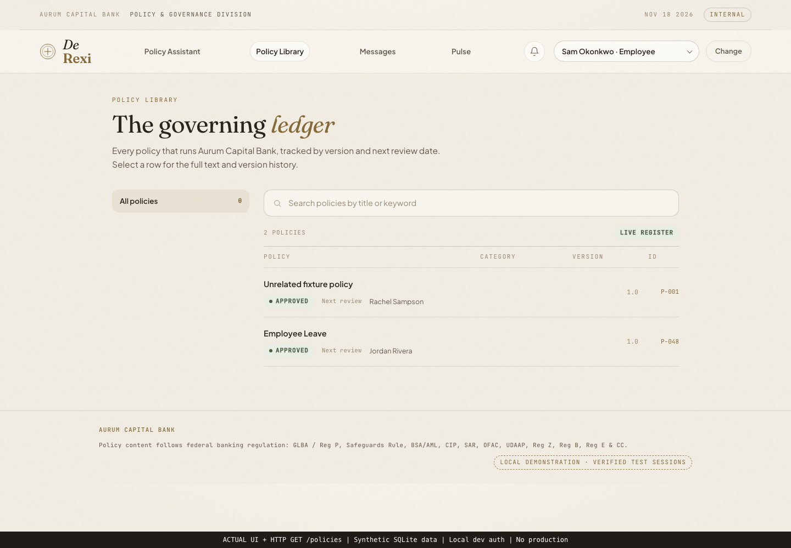
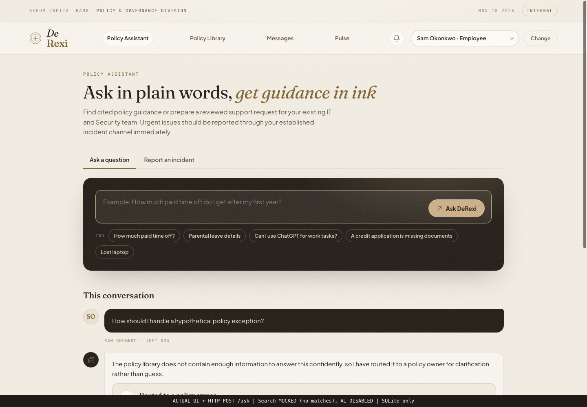

http://127.0.0.1:8041/policies
Retrieves the approved-policy collection; no request body. The Library formats its JSON array as rows.
200 OK authenticated, retained result H04
http://127.0.0.1:8041/ask
Sends JSON and creates fixture conversation, message and clarification records; returns guidance and IDs.
200 OK retained results H07–H09
Both: Accept: application/json; Authorization: Bearer [REDACTED].
POST also: Content-Type: application/json. Responses are JSON with Cache-Control: no-store.
Actual POST request body
{
"question": "How should I handle a hypothetical policy exception?"
}{
"id": 48,
"title": "Employee Leave",
"latest_version": "1.0"
}{
"conversation_id": 1,
"needs_clarification": true,
"triage": true
}The policy library does not contain enough information to answer this confidently, so I have routed it to a policy owner for clarification rather than guess.


A Swagger 401 response demonstrates rejection of missing/invalid credentials. It does not show successful retrieval, a saved question, or a returned policy answer. Success is established separately by the earlier automated 200 transcripts and UI captures.
Image availability: the user-referenced Swagger 401 files were not located. No Swagger screenshot is claimed; the authentic H02 transcript below independently proves rejection.
GET http://127.0.0.1:8041/policies
Accept: application/json
Authorization: absent · Body: none
401 Unauthorized
WWW-Authenticate: Bearer
Content-Type: application/json
{
"detail": "Authentication required"
}Authentication: the successful local requests used the existing development-only, loopback signed-token provider. The server resolves identity and enforces role/ownership checks; a body-supplied user ID cannot override the token. This does not verify production Supabase sign-in.
| Status | What the retained evidence demonstrates |
|---|---|
| 200 OK | Authenticated GET returns policy JSON; POST processes the question. Existing POST contract uses 200, not 201. H04/H07–H09. |
| 401 Unauthorized | Missing bearer credentials rejected; authentication challenge returned. H02. |
| 422 / 403 / 404 | Invalid question fields / identity mismatch / another employee's private conversation denied. H10–H12. |
1. GET + POST: H04/H07–H09, B02/B06. 2. Formatted display: B01/B03–B05.
3. Structured exchanges: api-evidence.md + retained JSON. 4. Secured API and friendly output: H02/H03/H11/H12 + B01–B07; public JSON source observations are also retained.
PostgreSQL search was mocked to no matches; this answer is deterministic clarification, not a live LLM result. Production data, authentication and external AI remain unverified. No mandatory new screenshot or runtime test is required by the supplied rubric.